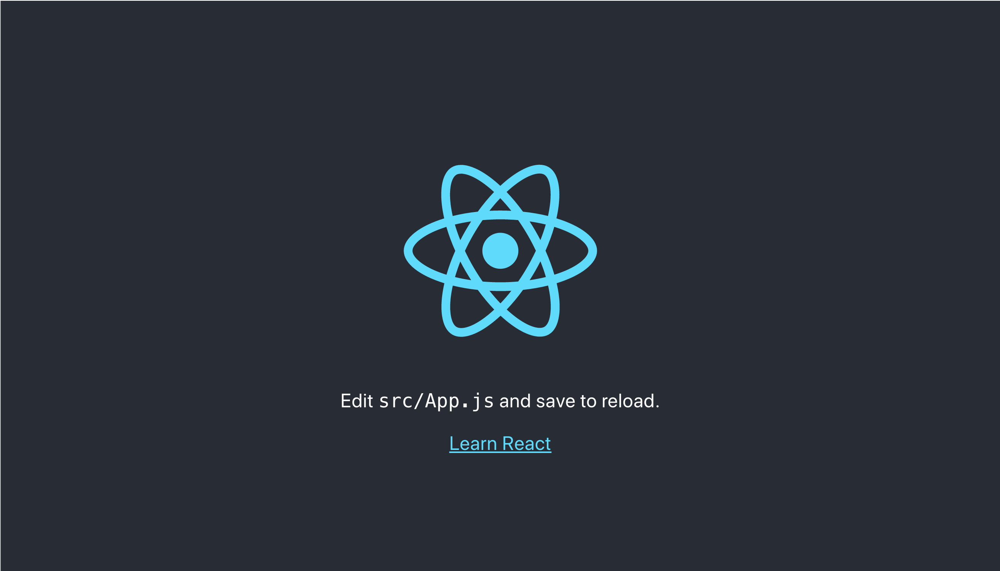

アプリケーション実装の準備
必要なツールのバージョン確認
-
Node.js と npm が必要なので，以下のコマンドで状況を確認する．
-
バージョンが表示されれば OK．
$ node -v
v16.13.0
$ npm -v
8.1.0
プロジェクトの作成
-
React はプロジェクト単位でアプリケーションを開発する．
-
専用のコマンドが用意されているので，以下のようにプロジェクトを作成する．
-
npxを使用すると，インストールしていないパッケージを実行できる．グローバルに残らないので，汚染の心配がない． -
最後の
react-appはプロジェクト名なので好きな名前で OK．
$ npx create-react-app react-app
※npm ではなく npx である点に注意！
いい感じにできたら，以下のコマンドでディレクトリに移動し，サーバを起動する．
$ cd react-app
$ npm start
自動的にブラウザが立ち上がり，以下のような画面が表示されれば OK．

サーバはターミナル上で control + c すると停止できる．
💡 Key Point
React の開発手順について
npm startを実行した状態でファイルを編集すると自動的にコンパイルが行われ，最新の状態がブラウザ画面に反映される．
npm start実行 -> vs code でコード編集 -> ブラウザで動作確認 の繰り返し．ライブラリ追加時などはサーバを再起動しないと反映されないため．動作しない場合は
control + cして再度npm startでサーバを起動する．
React の大まかな仕組み
-
アプリケーションは全て
public/index.html上で実行される． -
実行時には
src/index.jsが実行され，Appコンポーネントがindex.html上にマウントされる． -
実際に画面に表示されるのは
App.js内に記述された内容となる． -
この
App.jsから様々なコンポーネントを読み込むことでアプリケーションが動作する．
メイン画面の編集と不要なファイルの削除
メインの画面は App.js であり，このファイルが index.html の id=root に描画される．
初期状態では App.js に不要な記述が含まれているため削除する．合わせて使用しないファイルも削除する．
App.js のファイル名を App.jsx に変更し，内容を以下のように編集する．
// App.jsx
const App = () => {
return (
<>
<h1>react app</h1>
</>
);
};
export default App;
以下のファイルを削除する．
-
src/App.css -
src/App.test.js -
src/logo.svg
また，index.js の内容を以下のように編集する．
// index.js
import React from "react";
import ReactDOM from "react-dom";
import App from "./App";
import reportWebVitals from "./reportWebVitals";
ReactDOM.render(
<React.StrictMode>
<App />
</React.StrictMode>,
document.getElementById("root")
);
reportWebVitals();
以下のコマンドで開発サーバを起動する．
$ npm start
ブラウザ画面を確認すると以下のようになっている．
【補足】js と jsx
js：Javascript のファイル．
jsx：React 要素を生成する Javascript の拡張．React ではこちらを使うとたくさんいいことがある．